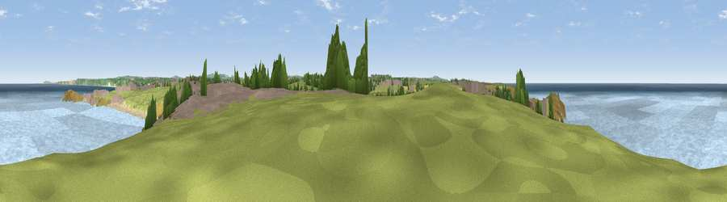

Viewpoint near Crantock
#12988 in England · top 30% of its area beats it · near CrantockWhere it is
The exact computed spot (SW 78975 61525). Click the marker for map links.
The view, rendered

A 360° render of this exact spot computed from the terrain model, tree cover and land cover — summer colours, afternoon light, calibrated against photographs of famous viewpoints. Real trees, hedges and buildings will differ in detail.
The panorama
Grey silhouette: terrain skyline in each direction (720 bearings, Earth curvature and refraction included). Dashed green: skyline with trees (+15 m) and buildings (+8 m) as obstacles. Blue strip: how far the ground is visible on each bearing.
Where the view opens
Wedge length = distance to the farthest visible ground on that bearing (vegetation-aware). Rings at 10, 25 and 50 km.
What fills the view
70% water · 17% grassland · 5% built-up · 3% cropland · 3% woodland · 1% bare ground
Angular shares of the visible panorama (visual magnitude), not map area. Landscape diversity 0.42 (0–1 Shannon).
Key numbers
More beautiful places nearby
The staircase of upgrades: each row has a higher view potential than everything closer. Driving times are estimates from straight-line distance, calibrated against real road routing — check an actual route before setting out.
| Place | Direction | Drive | Score |
|---|---|---|---|
| Viewpoint near Crantock | WSW · 0 km | ~1 min | 60.4 |
| Viewpoint near Holywell | SW · 3 km | ~6 min | 67.2 |
| Viewpoint near Holywell | SSW · 5 km | ~10 min | 71.1 |
| Viewpoint near Trenance | NE · 9 km | ~18 min | 71.2 |
| Viewpoint near Perrancoombe | SSW · 9 km | ~18 min | 71.3 |
| Viewpoint near St Eval | ENE · 12 km | ~23 min | 73.2 |
| Viewpoint near St Eval | ENE · 12 km | ~23 min | 78.3 |
| Penhale Hill | ESE · 13 km | ~25 min | 80.3 |
50.41192, -5.11226 · source: screening · position refined by local search. Computed location — check access rights before visiting.